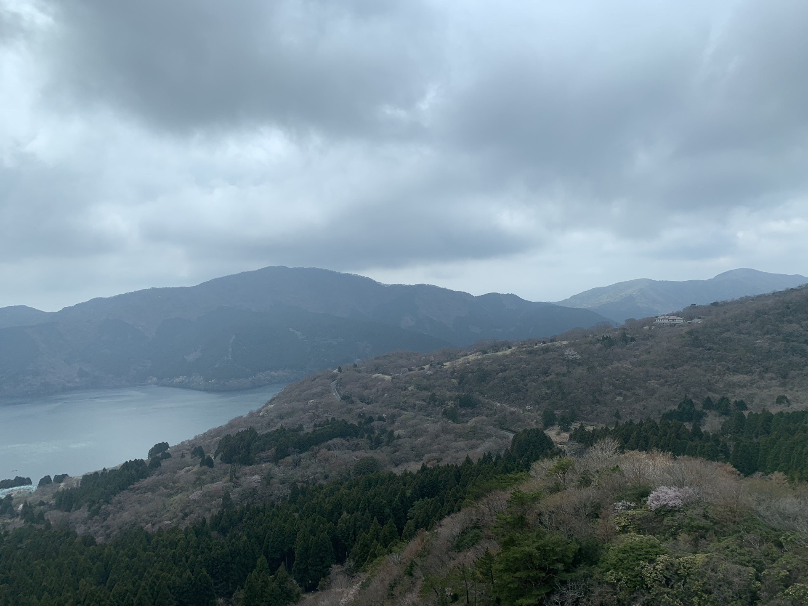

2019/0423Tue一言芳恩
先日、2日程お休みがあったので
久しぶりに家族旅行、箱根へ行って参りました

ハウスダストのおかげか、
顔のコンディションが整わなかったけれど。笑
庭園があったり小さな駅があったり
私の好きな雰囲気で凄く良かった！

私、本当に水族館が好きで
今回も家族に無理言って少し遠い水族館まで
連れて行ってもらいました
水族館が好き、というより
ウミガメ好きという感じですかね。
ウミガメもこの日見つけました！2匹いた！
私のカメラでしっかりと抑えました。
ウミガメを見る為に行っているようなもの。

曇っておりましたが、とても綺麗な景色でした

皆様は今まで行った中で
ここは良かったな〜ここは美味しかった！
という場所はありますか？
是非、教えて下さい(^ ^)
みり愛
2019/04/23 20:06
コメント(454)
北海道いいところだよ〜
関東とはまた違った雰囲気を味わえます。
ジンギスカンも美味いので1度行ってみては！
関東とはまた違った雰囲気を味わえます。
ジンギスカンも美味いので1度行ってみては！
みり愛ちゃんブログ更新ありがとう！！
アルバム曲最近めっちゃ聴いてます〜
特にゴルゴンゾーラは鬼リピです笑
それと新曲のタイトルは「Sing Out！」なんですね！楽しみです！！
就活で次のイベントは23枚目個握ですがよろしくお願いします！
これからも応援してます！！
アルバム曲最近めっちゃ聴いてます〜
特にゴルゴンゾーラは鬼リピです笑
それと新曲のタイトルは「Sing Out！」なんですね！楽しみです！！
就活で次のイベントは23枚目個握ですがよろしくお願いします！
これからも応援してます！！
広島の厳島神社良かったよ！
同じく水族館大好き。ペンギン見てボーっとしてるのが好き。
アクアマリンふくしまなんてどーかな？飼育されてるサンマを鑑賞できる珍しいとこ。前に生ちゃんが訪問してくれた事があります。是非HPをご覧あれ。一緒に行きたい気持ちはぐっと抑えておきます。
またインフルが流行り出してるみたいだから気をつけて！
アクアマリンふくしまなんてどーかな？飼育されてるサンマを鑑賞できる珍しいとこ。前に生ちゃんが訪問してくれた事があります。是非HPをご覧あれ。一緒に行きたい気持ちはぐっと抑えておきます。
またインフルが流行り出してるみたいだから気をつけて！
みり愛ちゃんこんばんは！
箱根かぁ〜
行ったことないけど、本当に良さそうで時間がゆっくり過ぎていきそうな場所ですよね。
みり愛ちゃんも覚えてたらご存知かもしれないけど、私は与田ちゃんと同じ地元ですが、魚は美味しいし、とても自然が豊かな場所です。
色んな地方に行けると良いですね。
23枚目の個別握手会は6月30日に行きます。
まうやんと行くよ〜〜
よろしくお願いします。
箱根かぁ〜
行ったことないけど、本当に良さそうで時間がゆっくり過ぎていきそうな場所ですよね。
みり愛ちゃんも覚えてたらご存知かもしれないけど、私は与田ちゃんと同じ地元ですが、魚は美味しいし、とても自然が豊かな場所です。
色んな地方に行けると良いですね。
23枚目の個別握手会は6月30日に行きます。
まうやんと行くよ〜〜
よろしくお願いします。
草津が良かったー
旅行楽しそう〜！！
水族館いいね！！
私も行きたくなっちゃった！笑
モバメだけじゃなくてブログでも素敵な風景の写真見れて嬉しい♡
こんぴらさんから見下ろした景色が綺麗だったなぁって思う！
めっちゃ田舎！笑
水族館いいね！！
私も行きたくなっちゃった！笑
モバメだけじゃなくてブログでも素敵な風景の写真見れて嬉しい♡
こんぴらさんから見下ろした景色が綺麗だったなぁって思う！
めっちゃ田舎！笑
更新ありがとー
最近ブログの数が多くて嬉しいよ
家族で温泉旅行とか羨ましいなー

水族館もいいね
魚とか海の動物好きだから、久しぶりに行きたくなったよ
オススメの場所はいっぱいあるけど、これからの時期は奥多摩とか秩父とか、緑のたくさんあるところがいいかな
海もいいけど、山のほうが落ち着けて好きだなー
最近ブログの数が多くて嬉しいよ
家族で温泉旅行とか羨ましいなー
水族館もいいね
魚とか海の動物好きだから、久しぶりに行きたくなったよ
オススメの場所はいっぱいあるけど、これからの時期は奥多摩とか秩父とか、緑のたくさんあるところがいいかな
海もいいけど、山のほうが落ち着けて好きだなー
ブログ更新ありがとう！
箱根旅行いいなー楽しそう！
水族館とみり愛なんかわかんないけど似合ってるね笑
俺は仙台の松島行ったことあるけど凄いよかったよ！
景色綺麗だったし牛タン食べれるしおすすめだよー
これからも応援してるよ！頑張ってね！
箱根旅行いいなー楽しそう！
水族館とみり愛なんかわかんないけど似合ってるね笑
俺は仙台の松島行ったことあるけど凄いよかったよ！
景色綺麗だったし牛タン食べれるしおすすめだよー
これからも応援してるよ！頑張ってね！
埼玉県にある筑波山っていうところを登ったのだけれどめちゃめちゃ景色が綺麗だったからぜひ運動も兼ねていってみてほしいです！！(＊¯ω¯＊)(一応ロープウェイあるからそれ使うのもありかな？笑)みり愛って登山部だよね！？笑
割と登りやすいので、行ってみてください。
初選抜入りおめでとう。風船は生きているの曲が好きでみり愛ちゃんのこと気になって(風船のフロントが好きでその中で1番に好き)密かに応援していて、努力が実ったと感じてほんとに嬉しい☺︎︎ほんとにおめでとうございます。ありがとう。
握手1回しか行ったことないから覚えてないかもしれないけど、ファンになって良かった。(今度の握手会いくかも！？)
体調には気をつけてお過ごしくださいっ！
またコメントするねっ！
⊿よんくん⊿
割と登りやすいので、行ってみてください。
初選抜入りおめでとう。風船は生きているの曲が好きでみり愛ちゃんのこと気になって(風船のフロントが好きでその中で1番に好き)密かに応援していて、努力が実ったと感じてほんとに嬉しい☺︎︎ほんとにおめでとうございます。ありがとう。
握手1回しか行ったことないから覚えてないかもしれないけど、ファンになって良かった。(今度の握手会いくかも！？)
体調には気をつけてお過ごしくださいっ！
またコメントするねっ！
⊿よんくん⊿
ちょうど今月、熱海に旅行行ってきたところです！
海をクルーズしたり来宮神社を参拝してきました。
行ったことがないなら、景色がすごくきれいだったのでみり愛にも行ってほしい！
海をクルーズしたり来宮神社を参拝してきました。
行ったことがないなら、景色がすごくきれいだったのでみり愛にも行ってほしい！
みりあお疲れ様ー！
水族館、自分も好きで全国の巡ってるけど、
名古屋港水族館とか須磨水族園とかいいよ！
あとは、静岡の下田の水族館はウミガメに餌やれるよ！
水族館、自分も好きで全国の巡ってるけど、
名古屋港水族館とか須磨水族園とかいいよ！
あとは、静岡の下田の水族館はウミガメに餌やれるよ！
みり愛ちゃんブログ更新ありがとう
お休みあったんだね
しっかりリフレッシュ出来てよかったね
私はちなみに日光に温泉に行っていました笑
箱根いいよね～
雰囲気が好きです
みり愛ちゃんの私服が大好きです
本当に乃木坂で一番好きなタイプな私服です
水族館の薄暗さが好きです
水槽がきらきらしてて癒されますよね～
ウミガメが大好きなみり愛ちゃんが
可愛くて好きです。
私もウミガメが最近気になってます笑
日光の神社。
東照宮とか二荒山神社とかすごく外装が綺麗で
迫力があって、階段とか大変だけど
沢山神社が並んでいて写真を撮るには最高の
場所でしたよ～
お休みあったんだね
しっかりリフレッシュ出来てよかったね
私はちなみに日光に温泉に行っていました笑
箱根いいよね～
雰囲気が好きです
みり愛ちゃんの私服が大好きです
本当に乃木坂で一番好きなタイプな私服です
水族館の薄暗さが好きです
水槽がきらきらしてて癒されますよね～
ウミガメが大好きなみり愛ちゃんが
可愛くて好きです。
私もウミガメが最近気になってます笑
日光の神社。
東照宮とか二荒山神社とかすごく外装が綺麗で
迫力があって、階段とか大変だけど
沢山神社が並んでいて写真を撮るには最高の
場所でしたよ～
今までに行って良かっな、美味しかったと思う場所は、家族で行った韓国ですかねー！！
旅行は良いよね〜(^^)
水族館繋がりで思った場所は、鴨川シーワールドが俺的に楽しかったかなぁ(^^)
まだ行ってないなら是非行ってみて（＾ν＾）
水族館繋がりで思った場所は、鴨川シーワールドが俺的に楽しかったかなぁ(^^)
まだ行ってないなら是非行ってみて（＾ν＾）
みりあちゃんかわいい！
これからも応援してます！頑張ってください！大好きです！
これからも応援してます！頑張ってください！大好きです！
家族旅行楽しそう！！
みり愛ちゃんブログ更新ありがとう！
海外だけど、シンガポールはいい街だったよ！
ぜひ行ってみてね！
海外だけど、シンガポールはいい街だったよ！
ぜひ行ってみてね！
更新ありがとう！
みり愛ちゃんからは、沢山家族とのエピソードが聞けてとっても仲良しなんだろうなと心があたたまります笑
箱根に来てくれてありがとね
箱根に住んでるわけじゃないけど、箱根にはとっても近いからなんだかみり愛ちゃんが来てくれて嬉しいな
箱根の鉄道と言うと、スイッチバックっていうのがあるんだけど、みり愛ちゃん乗ったのかな？もしまだだったらまたぜひ来て乗ってみてね
箱根はね、乗り物が沢山あって移動の時間も楽しいよね
箱根にはアザラシが温泉に入ってるみたいなのもあるんだけどみり愛ちゃんは見たのかな？あれ面白いよね
ところで写真はご家族に撮ってもらったのかな？
なんだか恥ずかしいね笑
うーんとね
そんなに旅行とかしたことないからあんまり分からないんだけど、
思い出に残ってるのは日本じゃないけど、オーストラリアのゴールドコーストかな。コアラの抱っことかもできるし海鮮が美味しいの！コアラの抱っこはもうあんまり長く出来ないらしいから行くなら早めがオススメだよ
改めて更新ありがとう！
またね
みり愛ちゃんからは、沢山家族とのエピソードが聞けてとっても仲良しなんだろうなと心があたたまります笑
箱根に来てくれてありがとね
箱根に住んでるわけじゃないけど、箱根にはとっても近いからなんだかみり愛ちゃんが来てくれて嬉しいな
箱根の鉄道と言うと、スイッチバックっていうのがあるんだけど、みり愛ちゃん乗ったのかな？もしまだだったらまたぜひ来て乗ってみてね
箱根はね、乗り物が沢山あって移動の時間も楽しいよね
箱根にはアザラシが温泉に入ってるみたいなのもあるんだけどみり愛ちゃんは見たのかな？あれ面白いよね
ところで写真はご家族に撮ってもらったのかな？
なんだか恥ずかしいね笑
うーんとね
そんなに旅行とかしたことないからあんまり分からないんだけど、
思い出に残ってるのは日本じゃないけど、オーストラリアのゴールドコーストかな。コアラの抱っことかもできるし海鮮が美味しいの！コアラの抱っこはもうあんまり長く出来ないらしいから行くなら早めがオススメだよ
改めて更新ありがとう！
またね
場所というか、小さなお店とかこだわりあって凄く美味しいよ！
みり愛ブログ更新(*´▽`人)ｱﾘｶﾞﾄｳ♡
私は、みり愛がブログを更新してくれると自分もコメントを書くことが日常になっています!!笑笑
もうすぐで、GWだね。私は｢北海道｣に行くよ！
北海道は、すごくオススメだよん！！特に小樽とか！
北海道は、ラーメンが美味しいし、他のものも美味しいから最高！！
無理せずこれからも頑張ってね！応援しています
1番の推しです！！！
私は、みり愛がブログを更新してくれると自分もコメントを書くことが日常になっています!!笑笑
もうすぐで、GWだね。私は｢北海道｣に行くよ！
北海道は、すごくオススメだよん！！特に小樽とか！
北海道は、ラーメンが美味しいし、他のものも美味しいから最高！！
無理せずこれからも頑張ってね！応援しています
1番の推しです！！！
チャァオ～～!☆彡
みりちゃま❕❤️❤️❤️❤️❤️笑顔
とっても・とっても綺麗だよぉ～～～⤴️⤴️❕❤️❤️❤️❤️❤️笑顔
特に～～～⤴️⤴️
水族館の水槽の前の～～⤴️⤴️
みりちゃまの笑顔の表情が素敵です❕❤️❤️❤️❤️❤️笑顔
みりちゃまぁ～～～⤴️⤴️⤴️・・
ずっとずっと応援しているよぉ～～～⤴️⤴️❕❤️❤️❤️❤️❤️笑顔
それでは、大好き過ぎる～～～⤴️⤴️
みりちゃま、またねぇ～⤴️⤴️❕❤️❤️❤️❤️❤️笑顔
バァイ❕❤️❤️❤️❤️❤️笑顔
☆大人しい、おすまし！より☆彡
ブログ更新ありがとう〜^_^
あんまり旅したりとかしたことないからさ、すごいおすすめの場所！とか自信持って言えないけど、山梨県の水が美味しかった思い出がある(^^)笑
温泉も安くてすごい良かった〜
何温泉かは忘れちゃったw
海ガメの優雅に泳ぐ様いいよね〜〜！
それと風景の写真毎回保存してるよ〜
いつもありがとね！
涼
あんまり旅したりとかしたことないからさ、すごいおすすめの場所！とか自信持って言えないけど、山梨県の水が美味しかった思い出がある(^^)笑
温泉も安くてすごい良かった〜
何温泉かは忘れちゃったw
海ガメの優雅に泳ぐ様いいよね〜〜！
それと風景の写真毎回保存してるよ〜
いつもありがとね！
涼
伊豆高原は良かったよ
ブログ更新ありがとう！！！
かわいい！！
元気でました。
かわいい！！
元気でました。
みり愛と魚たち(笑)魚たちまで可愛らしいぜ❗️
城崎温泉の近くにある城崎マリンワールドは家族で行ったことがあってオススメだよ、ペンギンの大名行列が可愛かったな(*´ω｀*)
しかし、みり愛さん黒が似合う女性に鳴っちまったなー(T_T)カッコいいね‼️
城崎温泉の近くにある城崎マリンワールドは家族で行ったことがあってオススメだよ、ペンギンの大名行列が可愛かったな(*´ω｀*)
しかし、みり愛さん黒が似合う女性に鳴っちまったなー(T_T)カッコいいね‼️
みり愛ちやん熱海が最高だよ！！！！魚がうますぎる！！！！
水族館似合うね
高校生の時の修学旅行で行った、長崎のハウステンボスは楽しかったなー。
みんなで自転車借りて、たくさん回った。
高校生の時の修学旅行で行った、長崎のハウステンボスは楽しかったなー。
みんなで自転車借りて、たくさん回った。
ブログありがとう〜！
先日の庭園の写真も箱根だったのかな？
やっぱり自然に触れるのはいいよね〜
思えばここ1年くらいどこも旅行出かけてないかも。
どっかいきたいな…行かないと嫌なこといっぱい溜まってきて置いていけないもんね。
この前すみだ水族館に行ってきたよ。
残念ながらカメはいなかったんだけどね〜
俺もやっぱり水族館は好き！！
あの閉鎖された空間に海に生きる動物達が生き生きと泳ぐ姿。それの中に入り一緒に泳いでいるような感覚。
もうあの不思議な空間は何にも変えられないと思う。
あーやば、話してたら行きたくなってきた！！！
茨城県にある国営ひたち海浜公園はすごくよかったな〜
今の時期はネモフィラの花畑が広がっていてとっても綺麗だよ！！
1度は行ってみてほしいな〜
ではー
へばなっ
先日の庭園の写真も箱根だったのかな？
やっぱり自然に触れるのはいいよね〜
思えばここ1年くらいどこも旅行出かけてないかも。
どっかいきたいな…行かないと嫌なこといっぱい溜まってきて置いていけないもんね。
この前すみだ水族館に行ってきたよ。
残念ながらカメはいなかったんだけどね〜
俺もやっぱり水族館は好き！！
あの閉鎖された空間に海に生きる動物達が生き生きと泳ぐ姿。それの中に入り一緒に泳いでいるような感覚。
もうあの不思議な空間は何にも変えられないと思う。
あーやば、話してたら行きたくなってきた！！！
茨城県にある国営ひたち海浜公園はすごくよかったな〜
今の時期はネモフィラの花畑が広がっていてとっても綺麗だよ！！
1度は行ってみてほしいな〜
ではー
へばなっ
みりあちゃん私服かっこいい
いいなぁ、家族旅行。
半年前に韓国行ったばっかだけどまた家族旅行したくなった！
モバメの庭園はどこだったのか未だにわからん。笑
おすすめの家族旅行地は圧倒的に北海道だね！
食べものが圧倒的に美味しいからね！
ゴルゴンゾーラ聴きながら書いてるけど、食べるのは無理だ。癖つよすぎて。曲は好きだけどね！！！
半年前に韓国行ったばっかだけどまた家族旅行したくなった！
モバメの庭園はどこだったのか未だにわからん。笑
おすすめの家族旅行地は圧倒的に北海道だね！
食べものが圧倒的に美味しいからね！
ゴルゴンゾーラ聴きながら書いてるけど、食べるのは無理だ。癖つよすぎて。曲は好きだけどね！！！
ブログありがとう！
箱根かぁ〜行ってみたいなぁー
東京からだと遠いけど、下呂温泉とかオススメだよ！
またブログ待ってるー！
箱根かぁ〜行ってみたいなぁー
東京からだと遠いけど、下呂温泉とかオススメだよ！
またブログ待ってるー！
こんばんは、
行って良かった所は、奈良県の長谷寺です。
四季折々の植物と、観音菩薩立像、
時間を忘れました。
行って良かった所は、奈良県の長谷寺です。
四季折々の植物と、観音菩薩立像、
時間を忘れました。
ブログ更新ありがとう！
家族旅行いいね(*˙︶˙*)
自分も水族館好きで、お姉ちゃんも水族館好きだからよく一緒に行くよ。うちのお姉ちゃんウミガメ好きすぎてウミガメの前から離れない（笑）
自分が行ったことある場所だと、和歌山県の白浜の海はすごい綺麗だったよ。
みり愛ちゃんがモバメのお裾分けシリーズで送ってきてくれる景色や空の写真が好きで、自分も撮ってみたいなと思ってカメラを買おうか迷ってる^^
お裾分けシリーズ楽しみにしてます(*˙︶˙*)
最近日中すごく暑いね^^;
夏はどうなるのかなと今から恐れてるけど、朝夕との温度差で風邪ひかないように気をつけてね。
これからも応援しています(*˙︶˙*)ﾉﾞ
家族旅行いいね(*˙︶˙*)
自分も水族館好きで、お姉ちゃんも水族館好きだからよく一緒に行くよ。うちのお姉ちゃんウミガメ好きすぎてウミガメの前から離れない（笑）
自分が行ったことある場所だと、和歌山県の白浜の海はすごい綺麗だったよ。
みり愛ちゃんがモバメのお裾分けシリーズで送ってきてくれる景色や空の写真が好きで、自分も撮ってみたいなと思ってカメラを買おうか迷ってる^^
お裾分けシリーズ楽しみにしてます(*˙︶˙*)
最近日中すごく暑いね^^;
夏はどうなるのかなと今から恐れてるけど、朝夕との温度差で風邪ひかないように気をつけてね。
これからも応援しています(*˙︶˙*)ﾉﾞ
ブログ更新ありがとう！！
そして選抜おめでとう！！
旅行えーなー笑
旅行といえば東京やから都内で色んなとこ巡るのはどうかな？笑
今まで野球やっとって忙しかったけど引退したからこれからイベントいっぱい行くよ！
まずは京都のシングル個握当たったからいきます！！
楽しみ〜〜！！
そして選抜おめでとう！！
旅行えーなー笑
旅行といえば東京やから都内で色んなとこ巡るのはどうかな？笑
今まで野球やっとって忙しかったけど引退したからこれからイベントいっぱい行くよ！
まずは京都のシングル個握当たったからいきます！！
楽しみ〜〜！！
水族館いいのわかる！
旅行で行った広島がやっぱり最高だったなー
ご飯も美味しいのが沢山あるし、宮島とか三段滝とか綺麗な景色も沢山！
いいところありすぎてとても1回の旅行じゃ足りないぐらい！
旅行で行った広島がやっぱり最高だったなー
ご飯も美味しいのが沢山あるし、宮島とか三段滝とか綺麗な景色も沢山！
いいところありすぎてとても1回の旅行じゃ足りないぐらい！
ブログ更新ありがとう。
一人旅ではないけど行きたかった箱根行けて良かった。ゆっくり出来たようで良かったね！
ウミガメの写真ありがとう！
熊本県の天草が景色が綺麗で海老が美味しくて良かったよ。
今日発売のBRODY読みました。みり愛が２期生を虹に喩えてる表現は良いね。ひとりひとり個性が違う色が虹のように合わさり１つの物を形成していくんだね。
MARQUEEでも言ってたように３、４期生には生駒ちゃんやみさ先輩のように注意、指導出来るような先輩になってください。
今週末のアルバム個握、楽しみにしてます！
一人旅ではないけど行きたかった箱根行けて良かった。ゆっくり出来たようで良かったね！
ウミガメの写真ありがとう！
熊本県の天草が景色が綺麗で海老が美味しくて良かったよ。
今日発売のBRODY読みました。みり愛が２期生を虹に喩えてる表現は良いね。ひとりひとり個性が違う色が虹のように合わさり１つの物を形成していくんだね。
MARQUEEでも言ってたように３、４期生には生駒ちゃんやみさ先輩のように注意、指導出来るような先輩になってください。
今週末のアルバム個握、楽しみにしてます！
ブログ更新ありがとう！
家族で、箱根の旅行ですか(^^)
ゆっくり出来たみたいで良かったね。
みり愛と、水族館デートが
したいな(///ω///)♪
BRODYも今日買いましたよ！
みりあやねで、銭湯での撮影、
二人とも良く撮れて可愛いかった♪
来月、地元の旅行で日光へ行くので、
お寺周りなど。そこも良さそうですよ！
5月１日に握手会行くのでよろすく
お願いします＼(^.^)／
みり愛が、すち☆
家族で、箱根の旅行ですか(^^)
ゆっくり出来たみたいで良かったね。
みり愛と、水族館デートが
したいな(///ω///)♪
BRODYも今日買いましたよ！
みりあやねで、銭湯での撮影、
二人とも良く撮れて可愛いかった♪
来月、地元の旅行で日光へ行くので、
お寺周りなど。そこも良さそうですよ！
5月１日に握手会行くのでよろすく
お願いします＼(^.^)／
みり愛が、すち☆
ブログ更新ありがとうございます。
選抜おめでとう！頑張ってくださいね。
箱根いいですね。私も行きたいー。
日光はすごくいいですよ。
東照宮はきれいだし、華厳の滝は涼しくて気持ちいいです。
ぜひ、行ってみてください！！
選抜おめでとう！頑張ってくださいね。
箱根いいですね。私も行きたいー。
日光はすごくいいですよ。
東照宮はきれいだし、華厳の滝は涼しくて気持ちいいです。
ぜひ、行ってみてください！！
みり愛かわいいよ！
家族旅行いいね〜
オススメは、だいぶ遠いけど
私の地元の長崎にある「海きらら」
っていう水族館！！森きららっていう
動物園も近くにあって意外と楽しい(笑)
海きららはクラゲがメインだよ〜
オススメは、だいぶ遠いけど
私の地元の長崎にある「海きらら」
っていう水族館！！森きららっていう
動物園も近くにあって意外と楽しい(笑)
海きららはクラゲがメインだよ〜
親が好きだからよく神社とかに家族旅行行くんだけど、厳島神社と出雲大社はなんかすごくて、楽しかった記憶があります〜ぜひ。笑
あと
大分の湯布院と別府の温泉いいので来てください！
別府にはあんまり大きくはないけど水族館もありますよ！猿もいます ♀️
あと
大分の湯布院と別府の温泉いいので来てください！
別府にはあんまり大きくはないけど水族館もありますよ！猿もいます ♀️
ブログ更新ありがとう！
いいなぁ〜家族旅行！ずっと仲良しで本当にいいね！
僕の地元に是非来てください！笑
田舎で観光名所ではないけれど京都のなかでは知られてる方だとおもうよー
今週末握手会よろしくお願いいたします！
これからも応援させてください。よろしくおねがいします！
いいなぁ〜家族旅行！ずっと仲良しで本当にいいね！
僕の地元に是非来てください！笑
田舎で観光名所ではないけれど京都のなかでは知られてる方だとおもうよー
今週末握手会よろしくお願いいたします！
これからも応援させてください。よろしくおねがいします！
渡辺みり愛様。
初選抜おめでとうございます。
これからが、本当の頑張り時です。
いままで通り、変わらない貴女で行きましょう。
結果はついてきます。
応援しています！
前に、前へと進んで下さい。
今日、アルバム買いました。
写真が、みり愛さんでした！
嬉しかったです。
ファイト‼️
初選抜おめでとうございます。
これからが、本当の頑張り時です。
いままで通り、変わらない貴女で行きましょう。
結果はついてきます。
応援しています！
前に、前へと進んで下さい。
今日、アルバム買いました。
写真が、みり愛さんでした！
嬉しかったです。
ファイト‼️
ブログ更新ありがとう〜 箱根いいなぁ... モバメの写真箱根だったんだね笑 水族館いいよね！修学旅行で沖縄行った時の美ら海水族館は感動的だった！ みり愛はウミガメが好きなんだね〜
ウミガメもいいけど、俺はチンアナゴが好きかな笑
長野県の白馬村ってところいいよ！ 親が結婚式をあげた場所ってことで毎年行ってるんだ〜 大自然に囲まれてて空気がおいしいのはもちろんなんだけど、蕎麦がめちゃ美味しいからもし行くことがあったら食べてみて！ 蕎麦好きにはオススメ笑
最後に、23rdの名古屋個握とったよ！ 名古屋以外はまだ高校生だから行けないし、アルバム個握は模試で行けないから当分先になっちゃうけどね... 楽しみにしてるね！ 今日もお疲れ様〜
ウミガメもいいけど、俺はチンアナゴが好きかな笑
長野県の白馬村ってところいいよ！ 親が結婚式をあげた場所ってことで毎年行ってるんだ〜 大自然に囲まれてて空気がおいしいのはもちろんなんだけど、蕎麦がめちゃ美味しいからもし行くことがあったら食べてみて！ 蕎麦好きにはオススメ笑
最後に、23rdの名古屋個握とったよ！ 名古屋以外はまだ高校生だから行けないし、アルバム個握は模試で行けないから当分先になっちゃうけどね... 楽しみにしてるね！ 今日もお疲れ様〜
みりあちゃん選抜おめでとう〜
千葉県にある鴨川シーワールドがウミガメが近くで観れてオススメだよー！ シャチも、みれるからぜひ行ってみてね！
千葉県にある鴨川シーワールドがウミガメが近くで観れてオススメだよー！ シャチも、みれるからぜひ行ってみてね！
アンダーライブで行った北海道のジンギスカンは本当に美味しかったな～(*´-`)
わたみ、こんばんは！
ブログ更新ありがとう。
家族旅行、いいね！
いいリフレッシュになったんじゃないかな？
水族館ではないけれど、北海道旭川市の旭山動物園はいいよー。
アザラシが筒状の形になっている水槽を移動するやつ。
あれはかわいかったなぁ。
僕が今まで行ったところで一番好きなのはスカイツリー！
握手会で札幌から東京に行った時は必ず上ってるよ。
夜景も日中の景色もどっちも好き！
6月末の握手会に参加するから、その時にまた行こうかな。
明日もファイト！
ブログ更新ありがとう。
家族旅行、いいね！
いいリフレッシュになったんじゃないかな？
水族館ではないけれど、北海道旭川市の旭山動物園はいいよー。
アザラシが筒状の形になっている水槽を移動するやつ。
あれはかわいかったなぁ。
僕が今まで行ったところで一番好きなのはスカイツリー！
握手会で札幌から東京に行った時は必ず上ってるよ。
夜景も日中の景色もどっちも好き！
6月末の握手会に参加するから、その時にまた行こうかな。
明日もファイト！
そうですね。水族館ならやはり美ら海でしたね。あの迫力は圧倒されました。


家族旅行いいですね！温泉入ったりゆっくりできましたか？
水族館行ったんですね！もうしばらく行ってないので久しぶりに行きたいなって思いました！ウミガメも久しく見ていないので久しぶりに会いたいなと思ってしまいました！僕は水族館ではクラゲが好きです！なんだかずっと見てられる感じがして！
僕が行った中では草津が最近では1番良かったです！みり愛ちゃんにも温泉にゆっくり浸かって欲しいです！